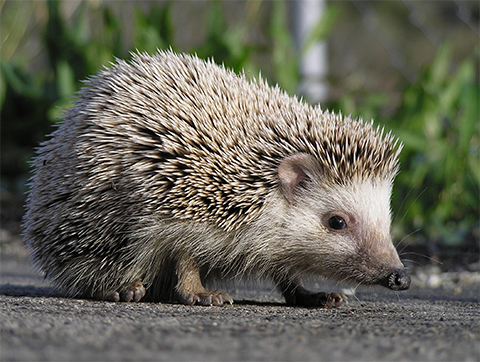

ERIZO COMÚN
Erinaceus europaeus
El erizo común usa el olor como parte esencial de su estrategia de supervivencia. Además de sus púas defensivas, puede empaparse con sustancias de olor fuerte para ahuyentar a depredadores y confundir su rastro.
Aunque no depende del olor para cazar como otros mamíferos, sí lo utiliza como señal de protección y como forma de marcar su presencia en el entorno. Su camuflaje natural y su defensa química lo convierten en un excelente ejemplo de adaptación defensiva.
- Nombre científico: Erinaceus europaeus
- Hábitat: Bosques, jardines y zonas herbáceas de Europa.
- Señal principal: Olor y tacto.
- Función: Despistar depredadores y protegerse.
